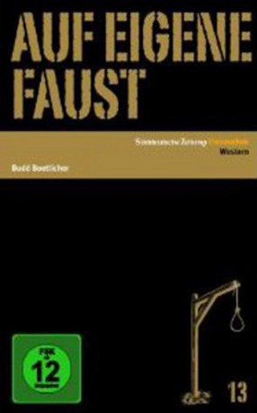

#4056 Auf eigene Faust
Alternativ: Ride Lonesome
 
 IMDB-Wertung: 7.3 / 10
IMDB-Wertung: 7.3 / 10  Metascore: 0
Metascore: 0 
Ben (Randolph Scott) wird von Rache getrieben. Er will jenen Verbrecher zur Strecke bringen, der einst seine Frau schändete und dann erhängte: Frank (Lee Van Cleef). Nach langer Suche kann er sich Franks Bruder schnappen, auch er ein gesuchter Mörder. Doch Ben will mehr. Er weiß, dass Frank kommen wird, um seinen Bruder zu befreien… US-Star James Coburn gab hier sein Spielfilmdebüt.
Jahr: 1959
Dauer: 69 Minuten
FSK: 12
Land: USA Studio: Columbia PicturesTonspuren: DD2.0 - ,
Untertitel:
Auflösung: 1080p (1920x824) Größe: 5560 MB
Genre: Drama, Western
Regisseur: Budd Boetticher
Drehbuch: Ron Kovic
Soundtrack:
Darsteller:
Datei: X:\HD-Western-1900-1959\Auf eigene Faust (1959, FSK12, 1920x824).mkv seit 17.07.2016
Festplatte: HD Eastern+Western
 Es gibt insgesamt 98 Filme in der Gruppe 'HD-Western-1900-1959'
Es gibt insgesamt 98 Filme in der Gruppe 'HD-Western-1900-1959'